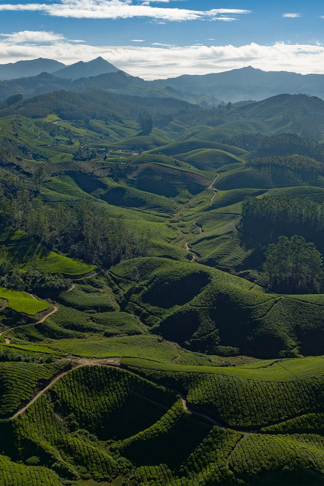
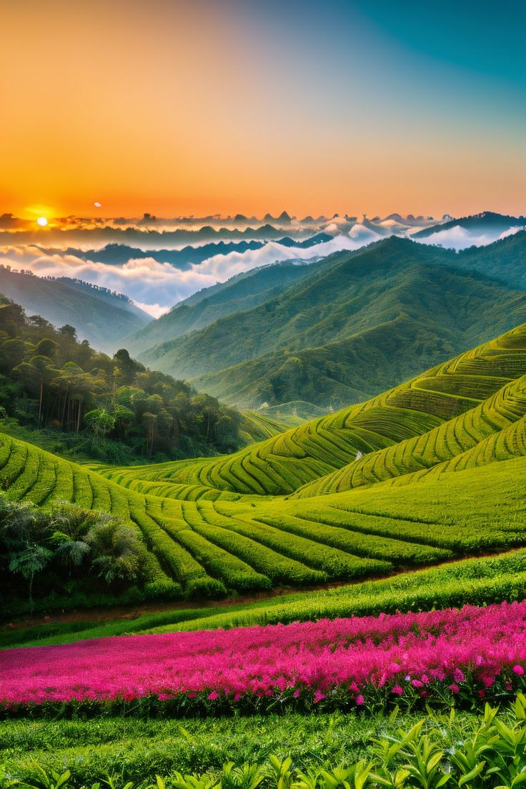
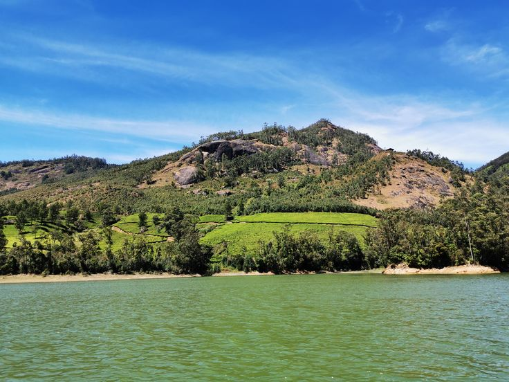
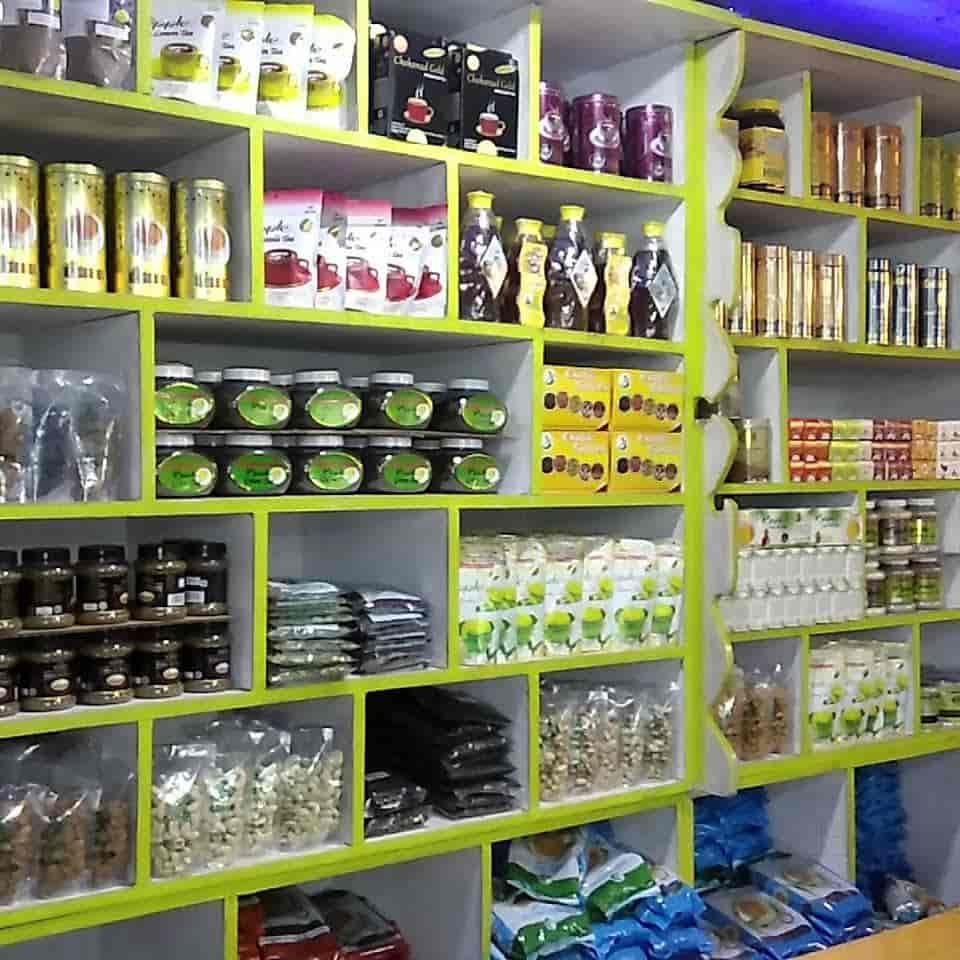
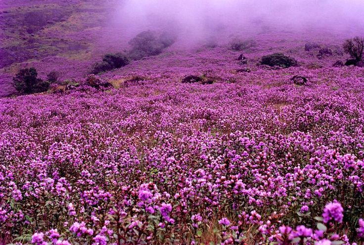

Munnar Over_all View
Munnar is a hill station in Kerala, famous for its tea plantations, misty hills, and cool climate. It is a paradise for nature lovers.
Peaceful Nature Spot (Tea Gardens)
Munnar’s tea gardens are vast and scenic, offering peaceful walks and breathtaking views of lush greenery.


Historical Place (Mattupetty Dam)
Mattupetty Dam is a popular attraction near Munnar, known for its reservoir and boating facilities amidst hills.
Local Market (Munnar Tea Market)
Munnar Tea Market is famous for fresh tea leaves, spices, and handmade chocolates, reflecting the local flavor.


Famous Festival (Flower Show)
The Flower Show in Munnar showcases colorful blooms and garden displays, attracting tourists every year.
Famous Local Food Items (Meals → Kerala Fish Curry)
Kerala Fish Curry is a spicy and tangy dish made with coconut milk and tamarind, popular in Munnar’s cuisine.